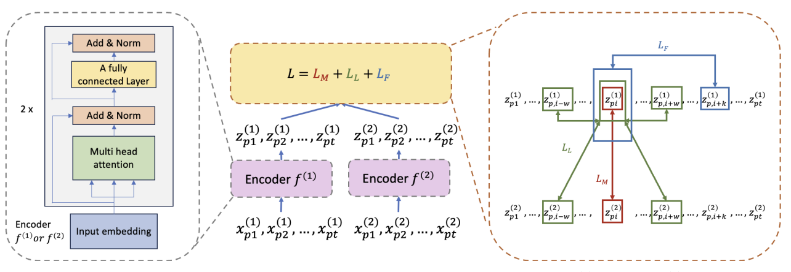
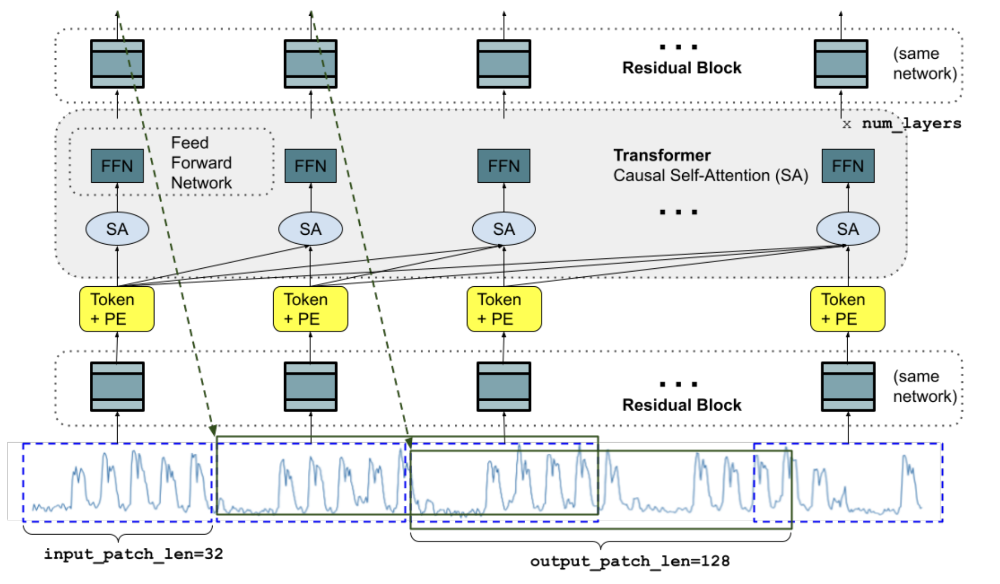

General impressions
Back to a massive venue. This time in Vienna, Austria, for the International Conference in Machine Learning (ICML). I organised my schedule much better than last time, and I got a lot of insight on new developments in several areas I am interested in, such as time series representation learning, medical informatics, and protein computational biology. Below my humble selection of favourite papers. Hope you find something interesting!
Contrastive Learning for Clinical Outcome Prediction with Partial Data Sources
We start with a significant contribution to the field of medical informatics. As electronic health records (EHR) become more and more common around the world, we see new methods to process, represent, and predict from them becoming increasignly important. In this case, the authors present CLOPPS (Contrastive Learning for clinical Outcome Prediction with Partial data Sources), which aims to capture information across different data sources from the same patients, and align them during training using contrastive learning. Importantly, they do it in a way in which not all modalities are necessary at inference time, which is a common limitation in many models.

The figure above represents the pretraining workflow envisioned for CLOPPS: given two longitudinal observations, the attention-based decoder on the left produces representations for each modality, which are then contrastively aligned in the latent space. The total loss used in the paper is a combination of two InfoNCE terms, that follow separate positive/negative pair sampling strategies, and a forecasting term. The first one, \(L_M\), is based on time matching. Here, the assumption is that different sources collectively and complementary represent health status at that moment in time, thus making samples with the same time stamp across sources the only positive positive pairs. Secondly, the model incorporates a quite original local similarity term (\(L_L\)), based on a Kaplan-Meier (KM) estimator for the outcome of interest. The idea is simple: if the patient is healthy, not so much changes in a short period of time, and the width of the local neighbourhood to sample positive pairs from can be larger. If a patient is sick in a particular way, the KM curve is steeper, and the neighbourhood to sample positive pairs from is smaller. While \(L_M\) takes care of strictly aligning the data sources across time, \(L_L\) focuses on regions of rapid change, corresponding with worse outcomes as predicted by the KM estimator. I think it’s a wonderful idea, which the included ablation studies show is relevant! Finally, the third term, \(L_F\), is a forecasting loss trained per modality independently.
For a review of the basic InfoNCE loss, feel free to visit this earlier post!
When it comes to experiments, the authors showcase SOTA performance in a series of settings, motivated by a real-world problem where the data comes from both a dialysis provider, as well as a US-national data system –the United States Renal Data System (USRDS)–. Here, as data from the national stream is not always available, it is crucial to develop a model that can still make predictions when some data is missing.
TimesFM: A decoder-only foundation model for time series forecasting.
This is a paper that, as many other coming from Google, was all over the internet when it came out. I was really looking forward to the poster, and I’m glad I managed to pass by and chat with the authors! As the title indicates, TimesFM is a decoder-only foundation model for univariate time series forecasting, trained on both Google trends and wikimedia access statistics.
Data are tokenised across time, and the architecture matches a standard decoder-only transformer, where ’tokens’ are passed through a residual block instead of obtained from a lookup table (as in language models, for example) since the data is continuous. The model is trained to minimise the mean squared error loss between each token and another one, obtained at a horizon \(h\) in the future.

The figure above includes an illustration of the TimesFM model architecture during training, where an input time-series of a specific length is be broken down into input patches. As mentioned above, each patch is then processed into a vector by a residual block to the model dimension of the transformer layers. The vector is then added to sinusoidal positional encodings, and fed into a set of stacked transformer layers with multi-headed causal attention. The length of the patches and the horizon \(h\) vary during training, to prevent the model from overfitting to a single rigid setting.
The paper includes a series of experiments that explore different patching schemes on different benchmarks, reaching SOTA zero-shot performance in many of them. While this is definitely a paper to keep an eye on, one of its main limitations is the focus on univariate time series only. While training representation models on multivariate time series is a much harder problem, there are several recent works that look into this issue already. For example, iTransformer inverts the encoding strategy by tokenizing each feature independently across the entire time dimension, with self-attention focusing on feature interactions. Another interesting endeavour, which reaches SOTA performance in many benchmarks and leverages data from multiple sources, is UniTS. This model has separate attention mechanisms that work both across features and across time, and includes different sets of tokens to specify one of several tasks, including forecasting, imputation, and anomaly detection.
2Bits of Protein: Efficient Protein Language Models at the scale of 2-Bits
Finally, we shift gears a bit and move on to protein language models. This is a paper that was presented during the workshops on the last day of the conference, which builds on the recent idea of training language models with ternary weights that can be set to either zero, one, or minus one. This is a really relevant topic at the time of writing, since it has been extensively shown that models whose weights are mapped to ternary values can retain most of the precision of their full-precision counterparts, while being much more efficient in terms of memory and computation. This has huge implications for small and mid-size businesses, as well as for research labs that do not have access to the same computational resources as the big players in the field. Moreover, the ability to train and run models locally promises advantages in terms of privacy and data security, which is important in any health-related application (among others, of course).
In this work, the authors investigate training an encoder-only pLM using a ternary architecture, and benchmark it against ESM2 (with full-precision) using an extensive set of tasks from ProteinGym. While the ternary model is not as good as the full-precision one, it is still competitive in many tasks, and much more efficient. Authors also claim that based on the foundational work in the field, one can expect the ternary model to outperform ESM-2 once model size is scaled up. This remains to be seen!
Here is a snippet taken from the results:

All in all, I think the impact of this set of approaches can be huge for both small and large players. For once, it allows actors without SOTA hardware to train and use better models, but it also allows big companies to train much larger models than they would be able to otherwise. We’ll see if these practices become mainstream in the next few years.